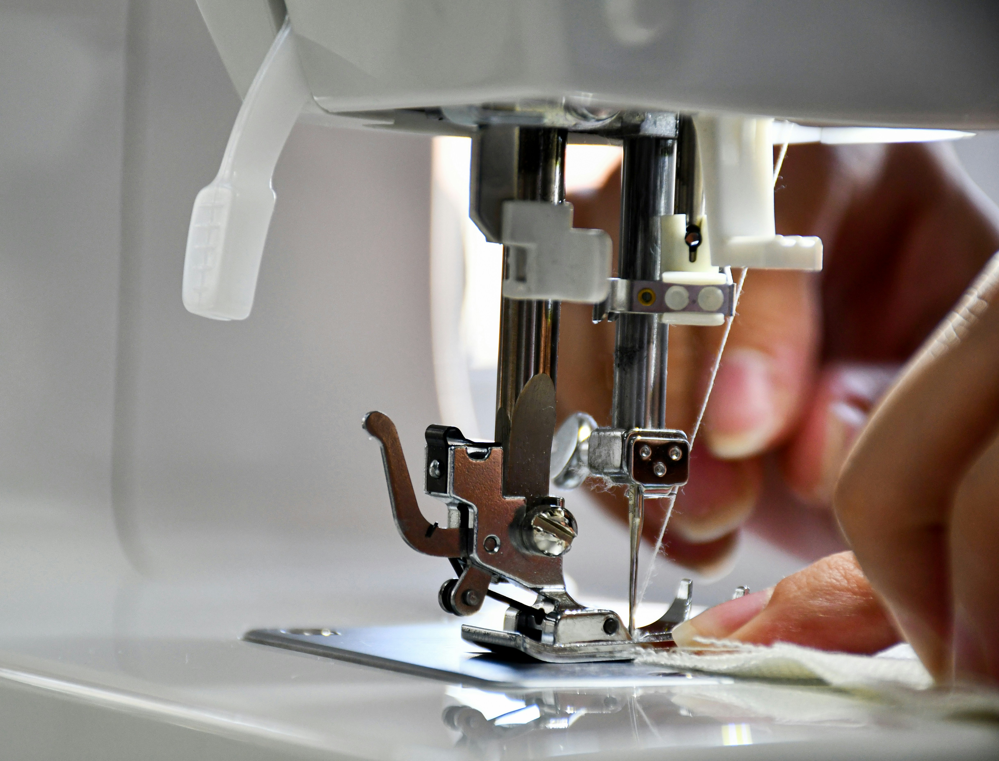

🧸 Project SOM은 무엇인가요? 🧸

최근 K-pop 산업에서 팬덤 마케팅 품목으로 '솜인형'이 주목을 받기 시작했을 뿐 더러,
이제는 K-pop을 넘어서 웹툰, 드라마, 영화, 애니메이션 등 다양한 장르에서도 굿즈로 등장하고 있습니다.
공식 굿즈가 아닌 비공식 굿즈나 개인 창작물로 솜인형 제작을 원하는 수요는 많아졌지만,
관련 정보는 굉장히 제한적이며 분산되어 있습니다.
특정 SNS, 커뮤니티나 개인 블로그 등 단편적으로 경험담이 공유되고 있을 뿐,
체계적으로 정리된 자료나 참고할 만한 가이드가 많이 부족한 것이 아쉬울 따름입니다.
Project SOM은
제한적인 정보로 인해 정보 수집에 어려움을 겪는 솜인덕분들을 위한 웹페이지 입니다.
🧸 우리의 목표 🧸
본인의 아이디어를 실제 솜인형으로 실현시키고자 하는 솜인덕분들을 위해,
솜인형 제작 준비와 팁을 아카이빙하여 여러분을 돕는 것이 목표입니다.
🧸 제공 콘텐츠 🧸
- 솜인형에 대한 기본 지식 (원단 종류, 사이즈, 바디 종류 등)
- 제작 준비 단계 안내 (도안 준비, 공장 선택, 사이즈 결정 등)
- 중국 공장을 통한 제작 과정
- 실제 의뢰 경험 및 제작 경험자들의 팁과 주의사항
- 커뮤니티를 통한 정보 공유
🧸 솜인형을 제작하려는 여러분께 유용한 가이드가 되겠습니다 🧸